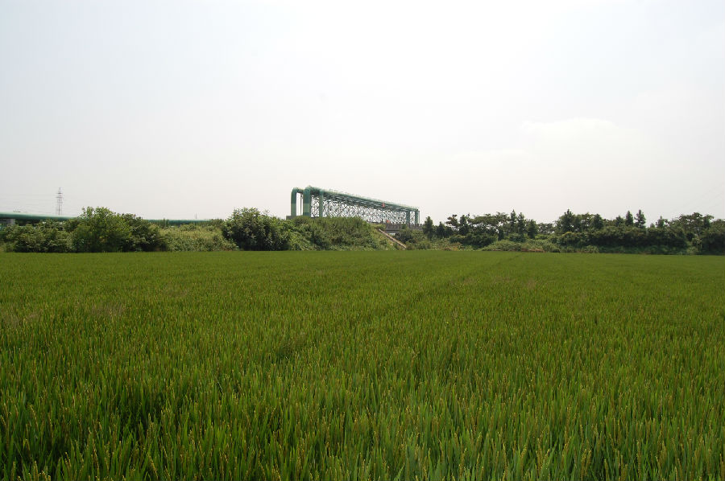
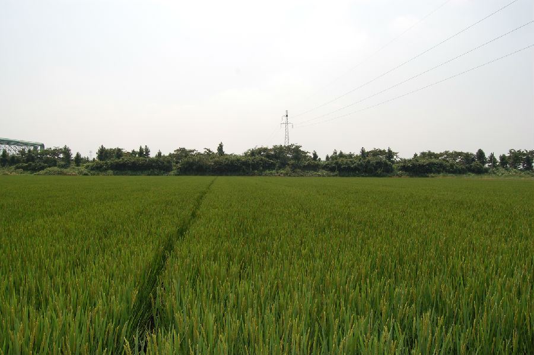

嘉兴市文物保护网 · 市级文物保护点 · 2020-11-02 · 原文


金桥遗址位于嘉兴市秀洲区王江泾镇双桥村42组（小地名童桥角，原金桥村），三面临河，东临京杭大运河，南为红旗荡，西为东荡。面积约60000平方米，文化层厚约0.4米。在过去的文物调查中发现墓葬1座，已受扰动，采集陶器以泥质灰陶为主，都为素面，有罐两件，陶杯和陶环各一件，属良渚文化；另采集有春秋战国时期少量印纹陶片。据此可判断该遗址年代为新石器时代良渚文化至春秋战国时期。该遗址范围较大，延续时间长，出土文物种类丰富，具有较高的历史和科学价值。1992年公布为嘉兴市文物保护点。